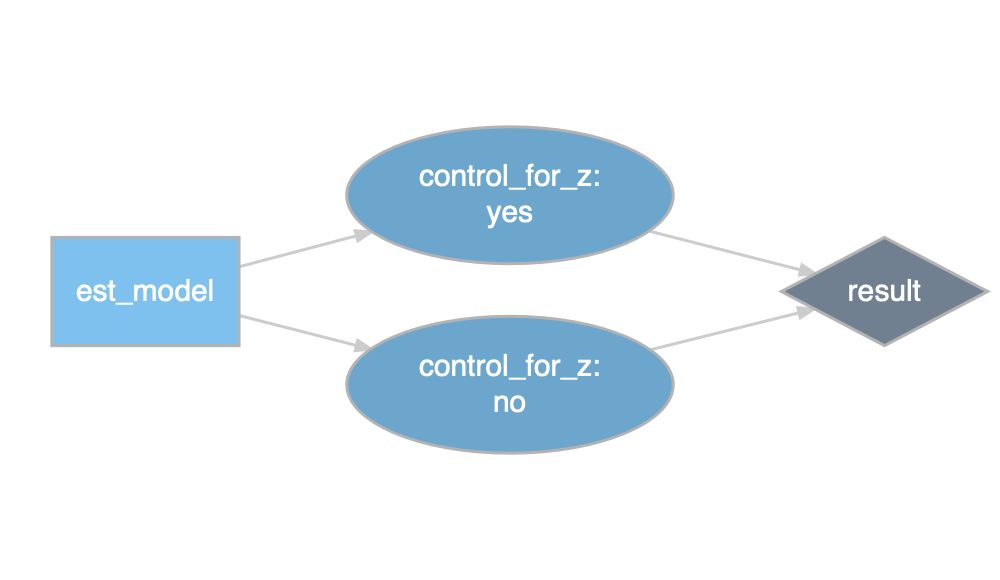
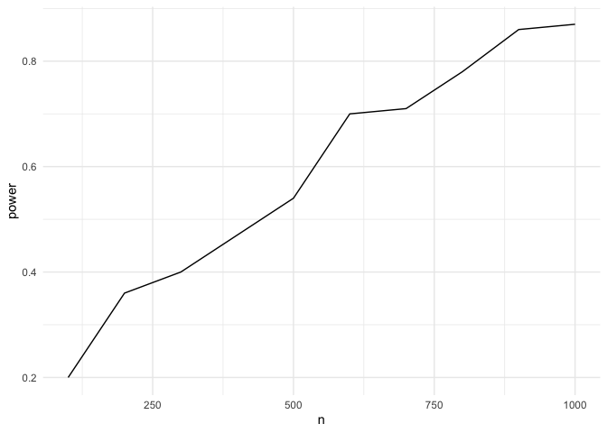

Joachim Gassen
A package to explore and document your degrees of freedom
This in-development package provides a coding infrastructure that allows researchers to systematically document and explore their researcher degrees of freedom when conducting analyses on observational data. The resulting code base is self-documenting, supports unit testing and power simulations based on simulated data. The documented researcher degrees of freedom can be exhausted to generate a distribution of outcome estimates.
New: Plot a specification curve
The below displays a specification curve (Simonsohn, Simmons and Nelson) based on an systematic exploration of the Preston curve. It summarizes 11,264 regressions in one plot. See this blog article and this vignette for more detail. While the code works with the result data frame created following the procedure below, it also works on data frames that contain choices and coefficient estimates created by other means.
# devtools::install_github("joachim-gassen/rdfanalysis")
library(rdfanalysis)
load(url("https://joachim-gassen.github.io/data/rdf_ests.RData"))
plot_rdf_spec_curve(ests, "est", "lb", "ub") 
Even newer: Let your researcher’s degrees of freedom shine!
To explore your specification curve you can also use a shiny frontend that is included with the package. If you use the coding infrastructure from the package it even allows you to interactively explore your findings from a single regression output to the full specification curve. See for yourself.
# devtools::install_github("joachim-gassen/rdfanalysis")
library(rdfanalysis)
load(url("https://joachim-gassen.github.io/data/rdf_ests.RData"))
# The following is based on having a local fork of the repo. See the
# vignettes of the package to learn more about how to use the full
# rdfanalsis package.
design <- define_design(steps = c("read_data",
"select_idvs",
"treat_extreme_obs",
"specify_model",
"est_model"),
rel_dir = "vignettes/case_study_code")
shiny_rdf_spec_curve(ests, list("est", "lb", "ub"),
design, "vignettes/case_study_code",
"https://joachim-gassen.github.io/data/wb_new.csv")A Shiny Specification Curve
A Package Tour
To provide a quick tour of the full package and its workflow I will use a “research design” where an independent variable x is confounded by a co-variate z and where the only researcher degree of freedom is whether to control for z in the regression setup. We will ignore the testing bit in this quick walk-through.
For a more in-depth introduction into the package, please refer to the vignette included in the documentation.
Step 1: Open a new Rstudio project in a clean directory and install the rdfanalysis package
devtools::install_github("joachim-gassen/rdfanalysis")
library(rdfanalysis)Step 2: Write a function that simulates data
sim_data <- function(n, effect_size) {
z <- rnorm(n)
x <- rnorm(n) + z
y <- effect_size*x + z + rnorm(n)
data.frame(x = x, y = y, z = z)
}Step 3: Define your research design by a series of functions
Each research design consists of a series of steps. Each step becomes a function. To initialize these functions, you can use the call define_design(). It creates a code directory in your current working directory and produces template code for each step. In this case, our design will have only one step.
design <- define_design("est_model")Step 4: Develop your code for each step
Edit the resulting template file est_model.R in the code directory until it looks like the code below.
est_model <- function(input = NULL, choice = NULL) {
step_description <- c(
"## Estimate model",
"### Content",
"",
"This step estimates on OLS model based on simulated data."
)
choice_description <- c(
"### Choice",
"",
"A character value `control_for_z` that may take one of the following values:",
"",
"- `yes`: control for z",
"- `no`: do not control for z"
)
choice_type <- list(
list(name = "control_for_z",
type = "character",
valid_values = c("yes", "no"))
)
if (is.null(choice)) return(list(
step_description = step_description,
choice_description = choice_description,
choice_type = choice_type
)) else check_choice(choice, choice_type)
# ___ Analysis code starts below ___
if(choice[[1]] == "yes")
mod <- lm(y ~ x + z, data = input)
else mod <- lm(y ~ x, data = input)
return(list(
data = list(
est = summary(mod)$coefficient[2,1],
lb = confint(mod)[2,1],
ub = confint(mod)[2,2]
),
protocol = list(choice)
))
} Step 5: Source your code
source_design(design)Step 6: Test your code
test_design(design, input = sim_data(100, 0.1), reporter = "minimal")## ........................Step 7: Document your design
The below serves documentation purposes. The function prepare_design_documentation() generates a PDF file in your project directory that documents your code. For it to work you need a local R Markdown installation that is capable to produce PDF files.
prepare_design_documentation(design, output_file = "my_design.pdf")prepare_design_flow_chart() produces a quick visual of the code flow.
prepare_design_flow_chart(design, landscape = TRUE)
Step 8: Run a single protocol of choices
sim_data(100, 0.1) %>%
est_model("yes")## $data
## $data$est
## [1] 0.1762571
##
## $data$lb
## [1] -0.03138844
##
## $data$ub
## [1] 0.3839027
##
##
## $protocol
## $protocol[[1]]
## [1] "yes"Step 9: Assess the power of your analysis for a certain protocol
power_df <- simulate_design_power(design, protocol = list("yes"),
input_sim_func = sim_data,
range_n = seq(100, 1000, 100),
effect_size = 0.1)
library(tidyverse)
power_df %>%
group_by(n) %>%
summarise(power = sum(lb > 0)/n()) %>%
ggplot(aes(x = n, y = power)) +
geom_line() +
theme_minimal()
Step 10: Exhaust your researcher degrees of freedom
df <- exhaust_design(design, sim_data(1000, 0.1))
kable(df)| control_for_z | est | lb | ub |
|---|---|---|---|
| yes | 0.1372860 | 0.078503 | 0.1960689 |
| no | 0.5653054 | 0.513296 | 0.6173148 |
Only two researcher degrees of freedom in this setting but you will easily get into the thousands in a real research setting. For a real-life case study on how to use rdfanalysis, please refer to the vignette included in the documentation.
Project Funding
This is a project of the Open Science Data Center and funded by the Deutsche Forschungsgemeinschaft (DFG, German Research Foundation): Project-ID 403041268 – TRR 266 Accounting for Transparency.